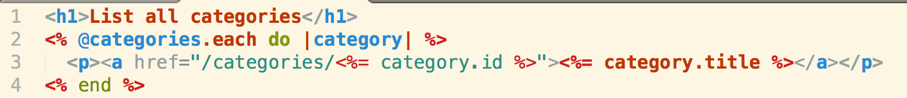

Background
Three weeks. I've been here at DevBootCamp, coding for 19 hours a day, 6 days a week(Sunday is catchup on sleep/laundry day). I've been learning Ruby, HTML, CSS, JavaScript, and recently HTTP Routes and URL requests. And today was the first day that I saw the beginings of my hard work pay off. I was able to build my first complete web app. It was a clone of Craigslist called Craigslist Jr.(I'll put the URL later). But today isn't about that. I'm here to talk HTTP Routes/URL requests and erb(embedded ruby)
HTTP Routes
URL Requests
.erb
.erb(embedded ruby) files are set up in the controller within HTTP routes(usually get routes) and are what your user views (Therefore a file within your view folder). At the very core, they are just HTML files that can use ruby. Usually the ruby objects are run in the background, but they can also be displayed. The syntax for embedding a ruby object is:
To actually view the ruby object(as when you are calling an attribute of a ruby object) is this:
Let's take a deeper look into why we would use the latter.
This is an example of a erb view with a user URL request on line 3.
Line 2 is allowing my ruby object(instance variable set to a params[:urlparameter] from my routes in my controller) to run in the background.
Line 3 is when we first use our erb display syntax to call the category object's id(remember that all objects and their attributes are in strings) to set our URL Request. After our URL request, we display each one of our categories' title attribute. Note that these are all wrapped up in an HTML "a href link". This should be a hint that we should set up a HTTP route in our controller that looks like '/categories/:id'.